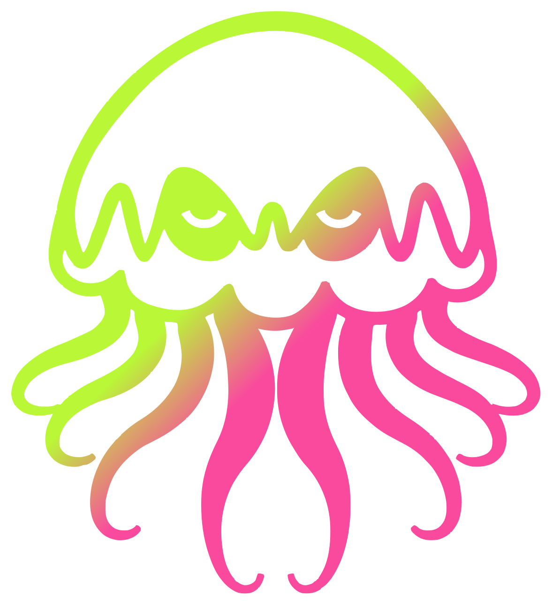
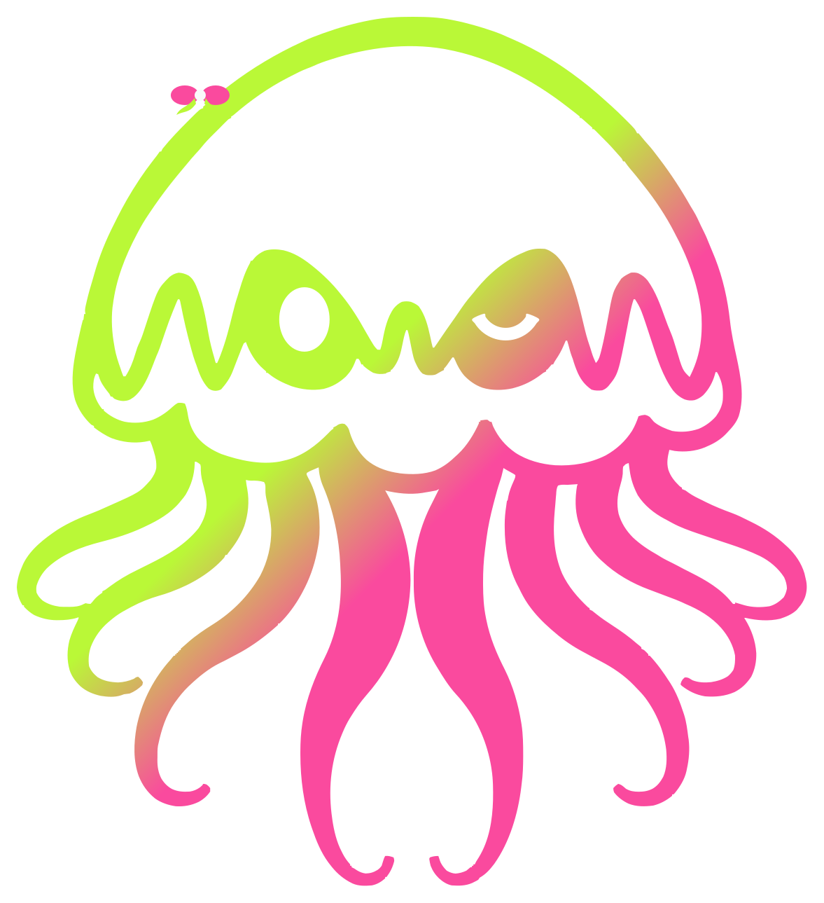
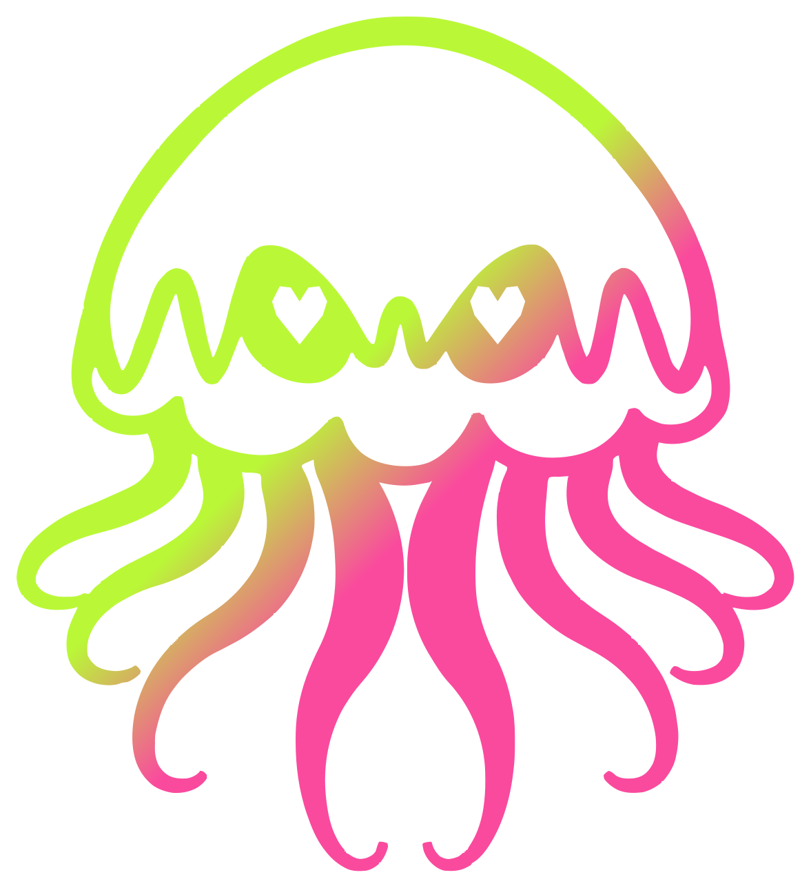
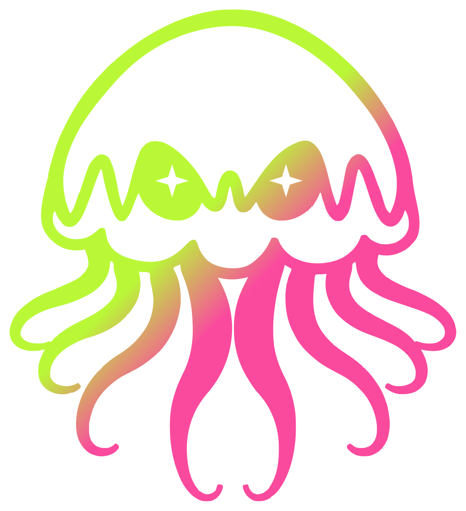
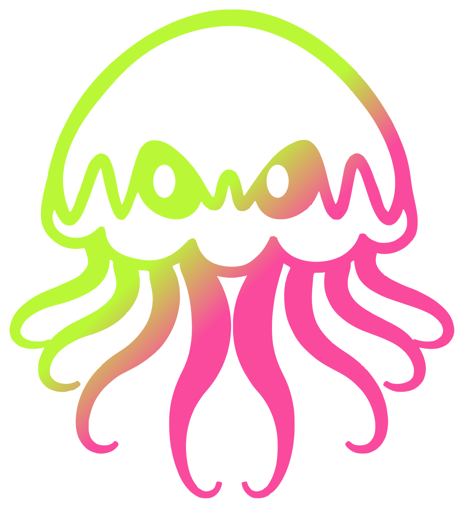
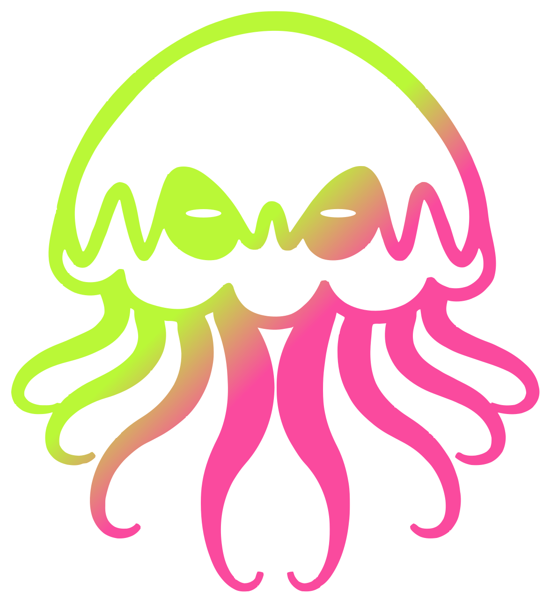
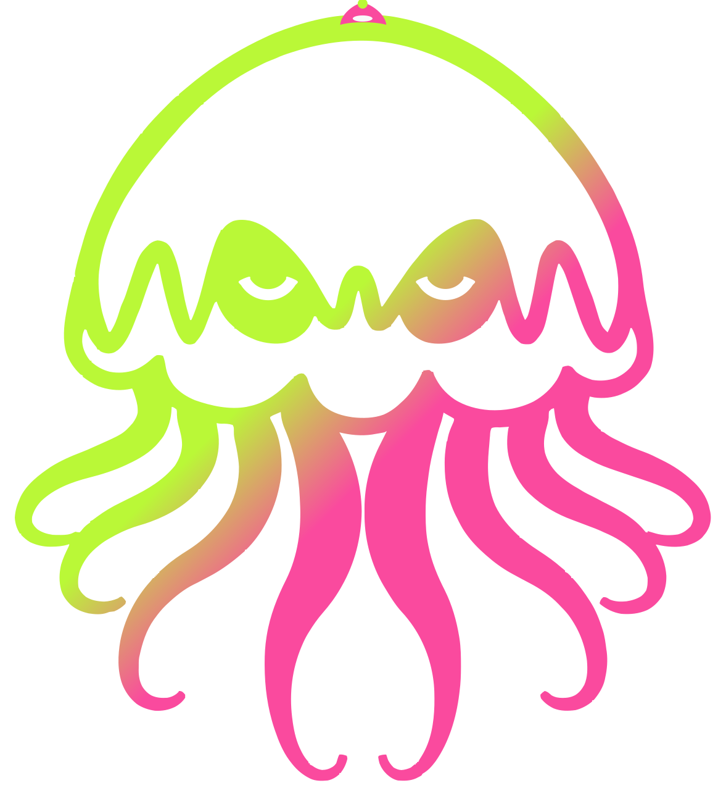
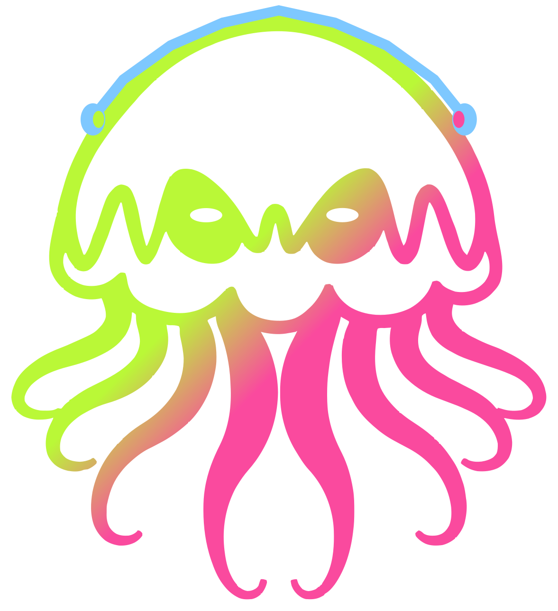

Jellyfish Mascot Gradient.svgOfficial mascot. Eyes are holes in the body.

jelly-happy.svgpng/jelly-happy.pngSmile-shaped eyes, still cut out of the body.

jelly-wink.svgpng/jelly-wink.pngOne eye open, one squeezed into a smile. Bow on the bell.
jelly-whoa.svgpng/jelly-whoa.pngRounder eyes, same spot on the body.
jelly-sleepy.svgpng/jelly-sleepy.pngHeavy lids. The holes sit low in the same eyes.

jelly-hearts.svgpng/jelly-hearts.pngHeart-shaped holes where the eyes are.

jelly-sparkle.svgpng/jelly-sparkle.pngFour-point eyes, same spark as the kit icon.

jelly-side-eye.svgpng/jelly-side-eye.pngBoth eyes slid toward the left.

jelly-unamused.svgpng/jelly-unamused.pngFlat lids.
jelly-glitch.svgpng/jelly-glitch.pngX eyes. The club error face.

jelly-party.svgpng/jelly-party.pngHappy eyes and a lime-and-pink hat on the bell.
jelly-blep.svgpng/jelly-blep.pngEyes up, tongue out under the bell.

jelly-tunes.svgpng/jelly-tunes.pngHeadphones over the bell. Eyes half-closed.